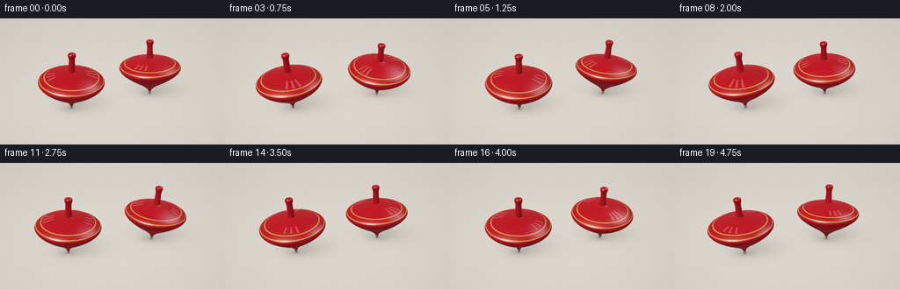
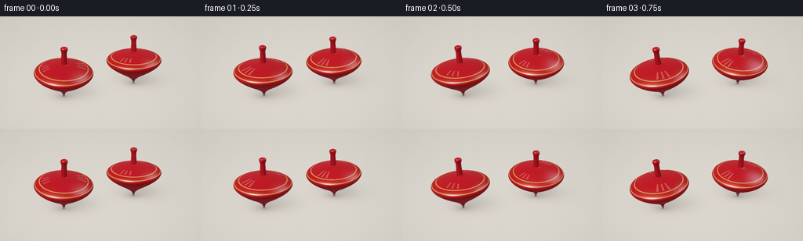

CODING AGENTS AS PIXEL WORLD MODELS
traex/GPT-6.1-Sol · instance_preservation_0039
点击播放 · 原生 RGB 像素
逐轮保存的候选
回放视频、检查图与代码变化。
每份候选均可单独播放。实际图片检查记录在下方工具轨迹中。
候选 01播放与检查图
点击播放 · 原生 RGB 像素


展开代码变化
--- 上一保存版本
+++ 本次保存版本
@@ -0,0 +1,183 @@
+from pathlib import Path
+import numpy as np
+from PIL import Image
+import artifact_io
+
+# Small analytic studio scene: two lacquered wooden spinning tops.
+W,H,S=256,144,3
+WW,HH=W*S,H*S
+cam=np.array([0.,-6.5,4.1])
+target=np.array([0.,0.,.52])
+forward=(target-cam); forward/=np.linalg.norm(forward)
+right=np.cross(forward,[0.,0.,1.]); right/=np.linalg.norm(right)
+up=np.cross(right,forward)
+focal=WW/4.6*6.9
+Y,X=np.mgrid[:HH,:WW]
+dirs=(forward[None,None,:]*focal + (X[...,None]+.5-WW/2)*right - (Y[...,None]+.5-HH/2)*up)
+dirs/=np.linalg.norm(dirs,axis=-1,keepdims=True)
+light=np.array([-3.5,-4.,6.5]); light/=np.linalg.norm(light)
+light2=np.array([3.,2.,4.]); light2/=np.linalg.norm(light2)
+
+# Monotonic cubic interpolation makes a smoothly turned profile with a rolled lip.
+knots=np.array([[0,.018],[.045,.028],[.10,.041],[.16,.097],[.26,.222],[.38,.398],[.51,.57],[.59,.655],[.635,.686],[.665,.696],[.697,.686],[.73,.65],[.78,.546],[.824,.415],[.86,.27],[.883,.137],[.9,.079],[.94,.073],[1.17,.061],[1.22,.071],[1.258,.083],[1.29,.078],[1.31,.051],[1.322,0.]])
+x,r=knots.T
+slopes=np.diff(r)/np.diff(x)
+m=np.zeros(len(x)); m[0]=slopes[0]; m[-1]=slopes[-1]
+for j in range(1,len(x)-1):
+ if slopes[j-1]*slopes[j]>0: m[j]=2/(1/slopes[j-1]+1/slopes[j])
+zs=[]; rs=[]
+for j in range(len(x)-1):
+ count=max(2,int((x[j+1]-x[j])*60))
+ t=np.arange(count)/count; h=x[j+1]-x[j]
+ zs.extend(x[j]+h*t)
+ rs.extend((2*t**3-3*t*t+1)*r[j]+(t**3-2*t*t+t)*h*m[j]+(-2*t**3+3*t*t)*r[j+1]+(t**3-t*t)*h*m[j+1])
+zs=np.r_[zs,x[-1]]; rs=np.r_[rs,r[-1]]
+
+floor_t=-cam[2]/dirs[:,:,2]
+floorP=cam+floor_t[...,None]*dirs
+fx,fy=floorP[...,0],floorP[...,1]
+# Warm matte ivory tabletop, softly lit. Restrained grain prevents a CG-flat background.
+grain=(.30*np.sin(fx*8+np.sin(fy*1.4))+.16*np.sin(fx*47+fy*3)+.08*np.sin(fx*112+fy*11))
+base=np.empty((HH,WW,3)); base[:]=[.70,.666,.605]
+base+=(grain*.008)[...,None]
+base+= (.022*np.exp(-((fx+1.6)**2+(fy+1.)**2)/12)-.013*np.tanh(fy/4))[...,None]
+
+
+def transform(t,index):
+ # Small tip excursion and sustained precession, without a loss of identity.
+ ph=2*np.pi*(.73 if index==0 else .61)*t + index*2.1
+ amp=.065 if index==0 else .080
+ axis=np.array([amp*np.cos(ph),amp*np.sin(ph),1.]); axis/=np.linalg.norm(axis)
+ u=np.cross([0.,1.,0.],axis); u/=np.linalg.norm(u)
+ v=np.cross(axis,u)
+ spin=2*np.pi*(2.35 if index==0 else -2.08)*t+index*.8
+ a=u*np.cos(spin)+v*np.sin(spin)
+ b=-u*np.sin(spin)+v*np.cos(spin)
+ R=np.column_stack((a,b,axis))
+ origin=np.array([-.94 if index==0 else .91,-.28 if index==0 else .34,.012])
+ origin[:2]+=[.038*np.cos(ph*.8+index),.028*np.sin(ph*.8+index)]
+ return origin,R
+
+
+def floor_render(states):
+ image=base.copy()
+ shade=np.ones((HH,WW))
+ for origin,R in states:
+ # Umbra under the broad body, penumbra cast away from the softbox.
+ x=fx-origin[0]; y=fy-origin[1]
+ shade*=1-.12*np.exp(-((x-.27)/.67)**2-((y-.31)/.49)**2)
+ shade*=1-.17*np.exp(-((x-.15)/.45)**2-((y-.15)/.32)**2)
+ shade*=1-.21*np.exp(-(x/.21)**2-(y/.14)**2)
+ shade*=1-.31*np.exp(-(x/.048)**2-(y/.039)**2)
+ # Extremely soft, faint red bounce on the matte table.
+ red_bounce=np.exp(-(x/.64)**2-((y+.03)/.39)**2)*.011
+ image[...,0]+=red_bounce
+ image[...,1]-=red_bounce*.4
+ image*=shade[...,None]
+ return image
+
+
+def top_render(image,origin,R,index):
+ # Conservative screen-space crop reduces the cost of exact cone intersection.
+ center=origin+np.array([0,0,.65])
+ rel=center-cam
+ depth=rel@forward
+ sx=WW/2+focal*(rel@right)/depth
+ sy=HH/2-focal*(rel@up)/depth
+ radius=int(focal/depth*1.03)+5
+ x0=max(0,int(sx-radius)); x1=min(WW,int(sx+radius))
+ y0=max(0,int(sy-radius)); y1=min(HH,int(sy+radius))
+ D=dirs[y0:y1,x0:x1]; dl=D@R
+ o=(cam-origin)@R
+ shape=D.shape[:2]
+ nearest=np.full(shape,np.inf)
+ nz=np.zeros(shape); nr=np.zeros(shape)
+ slope_at=np.zeros(shape)
+ dx,dy,dz=dl[...,0],dl[...,1],dl[...,2]
+ a0=dx*dx+dy*dy
+ b0=2*(o[0]*dx+o[1]*dy)
+ c0=o[0]**2+o[1]**2
+ for j in range(len(zs)-1):
+ z0,z1=zs[j:j+2]; r0,r1=rs[j:j+2]
+ k=(r1-r0)/(z1-z0); intercept=r0-k*z0
+ q=k*o[2]+intercept
+ a=a0-(k*dz)**2
+ b=b0-2*q*k*dz
+ c=c0-q*q
+ disc=b*b-4*a*c
+ root=np.sqrt(np.maximum(disc,0))
+ for sign in (-1,1):
+ tt=(-b+sign*root)/(2*a+1e-20)
+ z=o[2]+tt*dz
+ valid=(disc>=0)&(tt>.01)&(tt<nearest)&(z>=z0)&(z<=z1)
+ nearest=np.where(valid,tt,nearest)
+ slope_at=np.where(valid,k,slope_at)
+ hit=np.isfinite(nearest)
+ safe=np.where(hit,nearest,0)
+ p=o+safe[...,None]*dl
+ radial=np.sqrt(p[...,0]**2+p[...,1]**2)
+ normal=np.stack([p[...,0]/np.maximum(radial,1e-8),p[...,1]/np.maximum(radial,1e-8),-slope_at],axis=-1)
+ normal/=np.linalg.norm(normal,axis=-1,keepdims=True)
+ normal=normal@R.T
+ angle=np.arctan2(p[...,1],p[...,0])
+ z=p[...,2]
+ # Red lacquer; mild rotating crimson panels and real concentric lathe lines.
+ pigment=np.zeros((*shape,3)); pigment[:]=[.57,.009,.018]
+ panels=.955+.045*np.cos(8*angle+z*3.2)
+ pigment*=panels[...,None]
+ band=(np.abs(z-.712)<.008)|(np.abs(z-.771)<.005)
+ pigment=np.where(band[...,None],np.array([.70,.36,.073]),pigment)
+ # Two delicate ivory ticks on the upper shoulder make rotation legible.
+ wrap=lambda a: (a+np.pi)%(2*np.pi)-np.pi
+ tick=(np.abs(wrap(angle-.25))<.047)&(z>.786)&(z<.851)
+ tick|=(np.abs(wrap(angle-3.39))<.039)&(z>.791)&(z<.841)
+ pigment=np.where(tick[...,None],[.83,.67,.43],pigment)
+ # Tiny steel point; the spindle remains red.
+ metal=z<.074
+ pigment=np.where(metal[...,None],[.24,.26,.27],pigment)
+ diffuse=np.maximum(normal@light,0)
+ fill=np.maximum(normal@light2,0)
+ hemi=.5+.5*normal[...,2]
+ brightness=.27+.60*diffuse+.13*fill+.085*hemi
+ color=pigment*brightness[...,None]
+ V=-D
+ half=V+light; half/=np.linalg.norm(half,axis=-1,keepdims=True)
+ nh=np.maximum(np.sum(normal*half,axis=-1),0)
+ half2=V+light2; half2/=np.linalg.norm(half2,axis=-1,keepdims=True)
+ nh2=np.maximum(np.sum(normal*half2,axis=-1),0)
+ nv=np.clip(np.sum(normal*V,axis=-1),0,1)
+ fresnel=.045+.955*(1-nv)**5
+ spec=(.21*nh**28+.76*nh**110)*(.7+1.5*fresnel)
+ color+=spec[...,None]*np.array([1.,.91,.78])
+ color+=(.19*nh2**70)[...,None]*np.array([.74,.81,1.])
+ # Broad cool edge reflection gives volume to the dark side of polished lacquer.
+ color+=(.055*(1-nv)**3*(.25+.75*hemi))[...,None]*np.array([.82,.82,.89])
+ texture=1+.0025*np.sin(z*670)+.0013*np.sin(angle*51+z*133)
+ color*=texture[...,None]
+ crop=image[y0:y1,x0:x1]
+ crop[hit]=color[hit]
+
+
+def render(t):
+ states=[transform(t,i) for i in range(2)]
+ img=floor_render(states)
+ # More distant top first; distinct silhouettes never overlap.
+ for i in (1,0): top_render(img,*states[i],i)
+ # Subtle photographic vignette and sRGB conversion.
+ vignette=1-.065*((X-WW/2)/(WW/2))**2-.045*((Y-HH/2)/(HH/2))**2
+ img=np.clip(img*vignette[...,None],0,1)
+ return np.where(img<=.0031308,12.92*img,1.055*img**(1/2.4)-.055)
+
+
+def main():
+ frames=[]
+ for n in range(20):
+ t=n/4
+ # A short shutter exposes motion without losing the red toy silhouettes.
+ im=sum(render(t+offset) for offset in (-.018,0,.018))/3
+ big=Image.fromarray(np.uint8(np.clip(im*255+.5,0,255)))
+ frames.append(np.asarray(big.resize((W,H),Image.Resampling.LANCZOS)))
+ print('frame',n,flush=True)
+ artifact_io.save(np.stack(frames),Path(__file__).resolve().parent)
+
+if __name__=='__main__': main()
可观测工具轨迹
实际执行的命令与返回图片。
命令 1exit 0
/bin/bash -lc 'ls -la; cat prompt.txt; cat GENERATION_RULES.md; cat task_spec.json'
命令 2exit 0
/bin/bash -lc 'cat artifact_io.py; cat player_template.html'
命令 3exit 0
/bin/bash -lc 'command -v ffmpeg || true'
命令 4exit 0
/bin/bash -lc "cat > generate.py <<'PY'
from pathlib import Path
import numpy as np
from PIL import Image
import artifact_io
# Small analytic studio scene: two lacquered wooden spinning tops.
W,H,S=256,144,3
WW,HH=W*S,H*S
cam=np.array([0.,-6.5,4.1])
target=np.array([0.,0.,.52])
forward=(target-cam); forward/=np.linalg.norm(forward)
right=np.cross(forward,[0.,0.,1.]); right/=np.linalg.norm(right)
up=np.cross(right,forward)
focal=WW/4.6*6.9
Y,X=np.mgrid[:HH,:WW]
dirs=(forward[None,None,:]*focal + (X[...,None]+.5-WW/2)*right - (Y[...,None]+.5-HH/2)*up)
dirs/=np.linalg.norm(dirs,axis=-1,keepdims=True)
light=np.array([-3.5,-4.,6.5]); light/=np.linalg.norm(light)
light2=np.array([3.,2.,4.]); light2/=np.linalg.norm(light2)
# Monotonic cubic interpolation makes a smoothly turned profile with a rolled lip.
knots=np.array([[0,.018],[.045,.028],[.10,.041],[.16,.097],[.26,.222],[.38,.398],[.51,.57],[.59,.655],[.635,.686],[.665,.696],[.697,.686],[.73,.65],[.78,.546],[.824,.415],[.86,.27],[.883,.137],[.9,.079],[.94,.073],[1.17,.061],[1.22,.071],[1.258,.083],[1.29,.078],[1.31,.051],[1.322,0.]])
x,r=knots.T
slopes=np.diff(r)/np.diff(x)
m=np.zeros(len(x)); m[0]=slopes[0]; m[-1]=slopes[-1]
for j in range(1,len(x)-1):
if slopes[j-1]*slopes[j]>0: m[j]=2/(1/slopes[j-1]+1/slopes[j])
zs=[]; rs=[]
for j in range(len(x)-1):
count=max(2,int((x[j+1]-x[j])*60))
t=np.arange(count)/count; h=x[j+1]-x[j]
zs.extend(x[j]+h*t)
rs.extend((2*t**3-3*t*t+1)*r[j]+(t**3-2*t*t+t)*h*m[j]+(-2*t**3+3*t*t)*r[j+1]+(t**3-t*t)*h*m[j+1])
zs=np.r_[zs,x[-1]]; rs=np.r_[rs,r[-1]]
floor_t=-cam[2]/dirs[:,:,2]
floorP=cam+floor_t[...,None]*dirs
fx,fy=floorP[...,0],floorP[...,1]
# Warm matte ivory tabletop, softly lit. Restrained grain prevents a CG-flat background.
grain=(.30*np.sin(fx*8+np.sin(fy*1.4))+.16*np.sin(fx*47+fy*3)+.08*np.sin(fx*112+fy*11))
base=np.empty((HH,WW,3)); base[:]=[.70,.666,.605]
base+=(grain*.008)[...,None]
base+= (.022*np.exp(-((fx+1.6)**2+(fy+1.)**2)/12)-.013*np.tanh(fy/4))[...,None]
def transform(t,index):
# Small tip excursion and sustained precession, without a loss of identity.
ph=2*np.pi*(.73 if index==0 else .61)*t + index*2.1
amp=.065 if index==0 else .080
axis=np.array([amp*np.cos(ph),amp*np.sin(ph),1.]); axis/=np.linalg.norm(axis)
u=np.cross([0.,1.,0.],axis); u/=np.linalg.norm(u)
v=np.cross(axis,u)
spin=2*np.pi*(2.35 if index==0 else -2.08)*t+index*.8
a=u*np.cos(spin)+v*np.sin(spin)
b=-u*np.sin(spin)+v*np.cos(spin)
R=np.column_stack((a,b,axis))
origin=np.array([-.94 if index==0 else .91,-.28 if index==0 else .34,.012])
origin[:2]+=[.038*np.cos(ph*.8+index),.028*np.sin(ph*.8+index)]
return origin,R
def floor_render(states):
image=base.copy()
shade=np.ones((HH,WW))
for origin,R in states:
# Umbra under the broad body, penumbra cast away from the softbox.
x=fx-origin[0]; y=fy-origin[1]
shade*=1-.12*np.exp(-((x-.27)/.67)**2-((y-.31)/.49)**2)
shade*=1-.17*np.exp(-((x-.15)/.45)**2-((y-.15)/.32)**2)
shade*=1-.21*np.exp(-(x/.21)**2-(y/.14)**2)
shade*=1-.31*np.exp(-(x/.048)**2-(y/.039)**2)
# Extremely soft, faint red bounce on the matte table.
red_bounce=np.exp(-(x/.64)**2-((y+.03)/.39)**2)*.011
image[...,0]+=red_bounce
image[...,1]-=red_bounce*.4
image*=shade[...,None]
return image
def top_render(image,origin,R,index):
# Conservative screen-space crop reduces the cost of exact cone intersection.
center=origin+np.array([0,0,.65])
rel=center-cam
depth=rel@forward
sx=WW/2+focal*(rel@right)/depth
sy=HH/2-focal*(rel@up)/depth
radius=int(focal/depth*1.03)+5
x0=max(0,int(sx-radius)); x1=min(WW,int(sx+radius))
y0=max(0,int(sy-radius)); y1=min(HH,int(sy+radius))
D=dirs[y0:y1,x0:x1]; dl=D@R
o=(cam-origin)@R
shape=D.shape[:2]
nearest=np.full(shape,np.inf)
nz=np.zeros(shape); nr=np.zeros(shape)
slope_at=np.zeros(shape)
dx,dy,dz=dl[...,0],dl[...,1],dl[...,2]
a0=dx*dx+dy*dy
b0=2*(o[0]*dx+o[1]*dy)
c0=o[0]**2+o[1]**2
for j in range(len(zs)-1):
z0,z1=zs[j:j+2]; r0,r1=rs[j:j+2]
k=(r1-r0)/(z1-z0); intercept=r0-k*z0
q=k*o[2]+intercept
a=a0-(k*dz)**2
b=b0-2*q*k*dz
c=c0-q*q
disc=b*b-4*a*c
root=np.sqrt(np.maximum(disc,0))
for sign in (-1,1):
tt=(-b+sign*root)/(2*a+1e-20)
z=o[2]+tt*dz
valid=(disc>=0)&(tt>.01)&(tt<nearest)&(z>=z0)&(z<=z1)
nearest=np.where(valid,tt,nearest)
slope_at=np.where(valid,k,slope_at)
hit=np.isfinite(nearest)
safe=np.where(hit,nearest,0)
p=o+safe[...,None]*dl
radial=np.sqrt(p[...,0]**2+p[...,1]**2)
normal=np.stack([p[...,0]/np.maximum(radial,1e-8),p[...,1]/np.maximum(radial,1e-8),-slope_at],axis=-1)
normal/=np.linalg.norm(normal,axis=-1,keepdims=True)
normal=normal@R.T
angle=np.arctan2(p[...,1],p[...,0])
z=p[...,2]
# Red lacquer; mild rotating crimson panels and real concentric lathe lines.
pigment=np.zeros((*shape,3)); pigment[:]=[.57,.009,.018]
panels=.955+.045*np.cos(8*angle+z*3.2)
pigment*=panels[...,None]
band=(np.abs(z-.712)<.008)|(np.abs(z-.771)<.005)
pigment=np.where(band[...,None],np.array([.70,.36,.073]),pigment)
# Two delicate ivory ticks on the upper shoulder make rotation legible.
wrap=lambda a: (a+np.pi)%(2*np.pi)-np.pi
tick=(np.abs(wrap(angle-.25))<.047)&(z>.786)&(z<.851)
tick|=(np.abs(wrap(angle-3.39))<.039)&(z>.791)&(z<.841)
pigment=np.where(tick[...,None],[.83,.67,.43],pigment)
# Tiny steel point; the spindle remains red.
metal=z<.074
pigment=np.where(metal[...,None],[.24,.26,.27],pigment)
diffuse=np.maximum(normal@light,0)
fill=np.maximum(normal@light2,0)
hemi=.5+.5*normal[...,2]
brightness=.27+.60*diffuse+.13*fill+.085*hemi
color=pigment*brightness[...,None]
V=-D
half=V+light; half/=np.linalg.norm(half,axis=-1,keepdims=True)
nh=np.maximum(np.sum(normal*half,axis=-1),0)
half2=V+light2; half2/=np.linalg.norm(half2,axis=-1,keepdims=True)
nh2=np.maximum(np.sum(normal*half2,axis=-1),0)
nv=np.clip(np.sum(normal*V,axis=-1),0,1)
fresnel=.045+.955*(1-nv)**5
spec=(.21*nh**28+.76*nh**110)*(.7+1.5*fresnel)
color+=spec[...,None]*np.array([1.,.91,.78])
color+=(.19*nh2**70)[...,None]*np.array([.74,.81,1.])
# Broad cool edge reflection gives volume to the dark side of polished lacquer.
color+=(.055*(1-nv)**3*(.25+.75*hemi))[...,None]*np.array([.82,.82,.89])
texture=1+.0025*np.sin(z*670)+.0013*np.sin(angle*51+z*133)
color*=texture[...,None]
crop=image[y0:y1,x0:x1]
crop[hit]=color[hit]
def render(t):
states=[transform(t,i) for i in range(2)]
img=floor_render(states)
# More distant top first; distinct silhouettes never overlap.
for i in (1,0): top_render(img,*states[i],i)
# Subtle photographic vignette and sRGB conversion.
vignette=1-.065*((X-WW/2)/(WW/2))**2-.045*((Y-HH/2)/(HH/2))**2
img=np.clip(img*vignette[...,None],0,1)
return np.where(img<=.0031308,12.92*img,1.055*img**(1/2.4)-.055)
def main():
frames=[]
for n in range(20):
t=n/4
# A short shutter exposes motion without losing the red toy silhouettes.
im=sum(render(t+offset) for offset in (-.018,0,.018))/3
big=Image.fromarray(np.uint8(np.clip(im*255+.5,0,255)))
frames.append(np.asarray(big.resize((W,H),Image.Resampling.LANCZOS)))
print('frame',n,flush=True)
artifact_io.save(np.stack(frames),Path(__file__).resolve().parent)
if __name__=='__main__': main()
PY
OPENBLAS_NUM_THREADS=1 python generate.py"命令 5exit 0
/bin/bash -lc "python - <<'PY'
from pathlib import Path
import numpy as np
from PIL import Image
p=np.load('pixels.npz')['pixels']
f=np.stack([np.asarray(Image.open(x)) for x in sorted(Path('frames').glob('*.png'))])
print('Saved tensor:', p.shape, p.dtype)
print('RGB frames:', f.shape, f.dtype)
print('Mean consecutive-frame change:',np.abs(np.diff(f.astype(float),axis=0)).mean())
for i in (0,10,19):
a=f[i]; mask=(a[...,0]>a[...,1]*1.5)&(a[...,0]>a[...,2]*1.4)
print('Frame', i, 'red pixels:',mask.sum(), 'left/right:',mask[:,:128].sum(),mask[:,128:].sum())
for name in ['generate.py','pixels.npz','index.html','inspection.png','transition_check.png']:
p=Path(name); print(name,p.stat().st_size,'bytes')
PY"保存候选 1 份；完成命令 5 次；可验证图片返回 0 张。原始 API 响应与完整日志保留在本地。